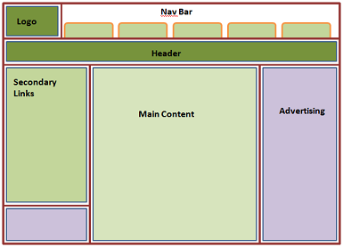

This paragraph starts out black and will change color when you click the button.
This paragraph starts out in Times New Roman and will change to Arial and bold when you click the button.
Humans scan web pages in an F pattern to determine if they want to stay on the page or not. That's why most pages have the nav area across the top or down the left, and the most important information appears near the upper left corner.
